Chapter 2 Parse NormalizeToMatrix
Function retriveData can extract data from EnrichedHeatmap::normalizeToMatrix function output. Then we can visualize the data extracted data from retriveData. retriveData returns a list which includes two long-format data.frame profile and heatmap. This charpter we will describe how to achive this.
2.2 Prepare interest genomic regions
Here we prepare human GRCh37 version of genes, we select 2000 genes for test:
setwd("./")
gtf <- import.gff("Homo_sapiens.GRCh37.87.gtf.gz",format = "gtf") |>
data.frame() |> filter(type == "gene") |>
select(seqnames,start,end,strand) |>
GRanges()
gtf
# GRanges object with 57905 ranges and 0 metadata columns:
# seqnames ranges strand
# <Rle> <IRanges> <Rle>
# [1] 1 11869-14412 +
# [2] 1 14363-29806 -
# ...
genes <- head(gtf,2000)2.3 Compute nomalized matrix
Now we use normalizeToMatrix compute normalized signals for bigiwig files around target regions:
bwfile <- list.files(path = "GSE212977_RAW/",pattern = ".bw",full.names = T)
bwfile
# [1] "GSE212977_RAW/GSM6567977_DSRCT1.H3K27ac.bw"
# [2] "GSE212977_RAW/GSM6567978_DSRCT1.H3K27me3.bw"
# [3] "GSE212977_RAW/GSM6567979_DSRCT1.H3K4m1.bw"
# [4] "GSE212977_RAW/GSM6567980_DSRCT1.H3K4m3.bw"
# [5] "GSE212977_RAW/GSM6567981_DSRCT1.H3K9ac.bw"
# [6] "GSE212977_RAW/GSM6567982_DSRCT1.INPUT.bw"
# x = 1
# compute matrix
lapply(seq_along(bwfile), function(x){
# func test
bw <- import.bw(bwfile[x])
mat_trim = normalizeToMatrix(bw, genes, value_column = "score",
extend = 3000, mean_mode = "w0", w = 50,
keep = c(0, 0.99),
background = 0,
smooth = TRUE)
}) -> mat_list2.4 Extract data
We can see the extracted data which include two long-format data.frame with some other attributes:
sample.names <- c('H3K27ac','H3K27me3','H3K4m1','H3K4m3','H3K9ac','INPUT')
# get matrix data
mat_df <- retriveData(mat.list = mat_list,sample.names = sample.names)
# check
str(mat_df)
# List of 2
# $ profile:'data.frame': 1200 obs. of 6 variables:
# ..$ density : num [1:1200] 0.851 0.829 0.824 0.83 0.836 ...
# ..$ x : int [1:1200] 1 2 3 4 5 6 7 8 9 10 ...
# ..$ sample : chr [1:1200] "H3K27ac" "H3K27ac" "H3K27ac" "H3K27ac" ...
# ..$ split : chr [1:1200] "Binding sites: 2000" "Binding sites: 2000" "Binding sites: 2000" "Binding sites: 2000" ...
# ..$ lower_ci: num [1:1200] 0.763 0.743 0.74 0.747 0.753 ...
# ..$ upper_ci: num [1:1200] 0.939 0.915 0.907 0.912 0.919 ...
# $ heatmap:'data.frame': 2400000 obs. of 5 variables:
# ..$ y : Factor w/ 2000 levels "Binding sites: 2000_455",..: 1316 1321 1650 1861 943 673 1261 1032 1429 389 ...
# ..$ x : num [1:2400000] 1 1 1 1 1 1 1 1 1 1 ...
# ..$ value : num [1:2400000] 0 1.411 1.526 0.442 0 ...
# ..$ split : chr [1:2400000] "Binding sites: 2000\n(n=2000)" "Binding sites: 2000\n(n=2000)" "Binding sites: 2000\n(n=2000)" "Binding sites: 2000\n(n=2000)" ...
# ..$ sample: chr [1:2400000] "H3K27ac" "H3K27ac" "H3K27ac" "H3K27ac" ...
# - attr(*, "class")= chr "chipData"
# - attr(*, "axis_name")= chr [1:4] "-3000" "start" "end" "3000"
# - attr(*, "axis_breaks")= num [1:4] 1 61 141 200
# - attr(*, "vline_x")= num [1:2] 61 141
# - attr(*, "axis_textx_hjust")= num [1:4] 0 0.5 0.5 12.5 EnrichedHeatmap visualization
First we show what the EnrichedHeatmap output looks like:
bg_col <- RColorBrewer::brewer.pal(6, "Set2")
lapply(seq_along(bwfile), function(x){
# func test
bw <- import.bw(bwfile[x])
mat_trim = normalizeToMatrix(bw, genes, value_column = "score",
extend = 3000, mean_mode = "w0", w = 50,
keep = c(0, 0.99),
background = 0,
smooth = TRUE)
EnrichedHeatmap(mat_trim, col = c("grey95",bg_col[x]), name = sample.names[x],
column_title = sample.names[x],
column_title_gp = gpar(fontsize = 10,
fill = bg_col[x]),
# top_annotation = HeatmapAnnotation(
# enriched = anno_enriched(
# ylim = c(0, 30))),
use_raster = F,
# show_heatmap_legend = lgd[x],
show_heatmap_legend = T
)
}) -> ht_list
# merge plot list
pdf("ht_6samples.pdf",width = 12,height = 8,onefile = F)
draw(Reduce("+",ht_list), ht_gap = unit(0.8, "cm"),
heatmap_legend_side = "bottom")
dev.off()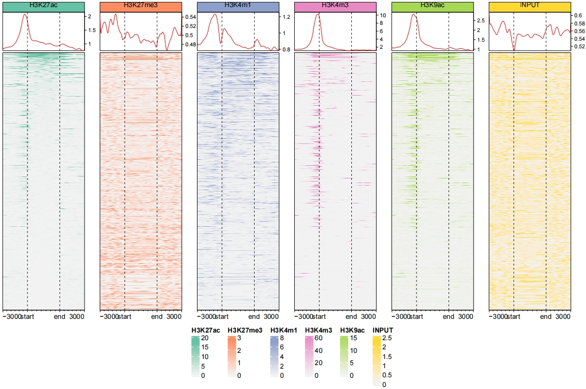
2.6 ChipVis visualization
Function ChipVis accept output object from retriveData. Just a little code needed to plot the data. You can plot the profile plot , heatmap plot or both with plot.type parameter.
2.6.1 Profile plot
Now we do some examples for profile plot. Default output:
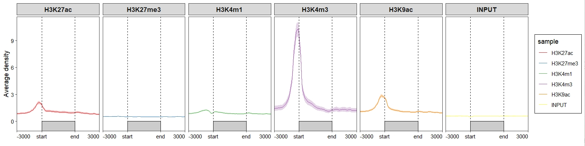
Control the line layers;
ChipVis(object = mat_df,
plot.type = "profile",
geom_line_params = list(color = "#C23373",linewidth = 1))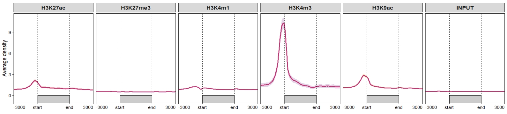
Change the sample orders:
ChipVis(object = mat_df,
plot.type = "profile",
geom_line_params = list(color = "#C23373",linewidth = 1),
sample.order = rev(sample.names))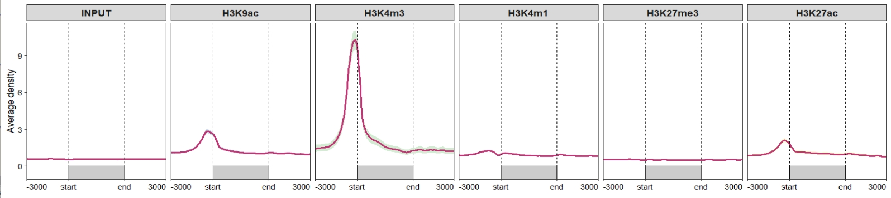 Don’t draw rect and control the facet parameters:
ChipVis(object = mat_df,
plot.type = "profile",
geom_line_params = list(color = "#C23373",linewidth = 1),
sample.order = rev(sample.names),
facet_profile_params = list(scales = "free_y",independent = "y"),
draw_rect = F)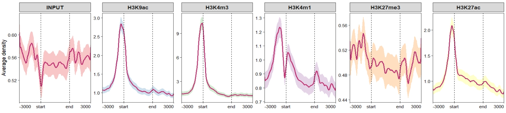 Change the facet background colors:
ChipVis(object = mat_df,
plot.type = "profile",
geom_line_params = list(color = "#C23373",linewidth = 1),
sample.order = rev(sample.names),
facet_profile_params =
list(strip = strip_themed(background_x =
elem_list_rect(fill = RColorBrewer::brewer.pal(6,"Set3"),
color = RColorBrewer::brewer.pal(6,"Set3"))
)))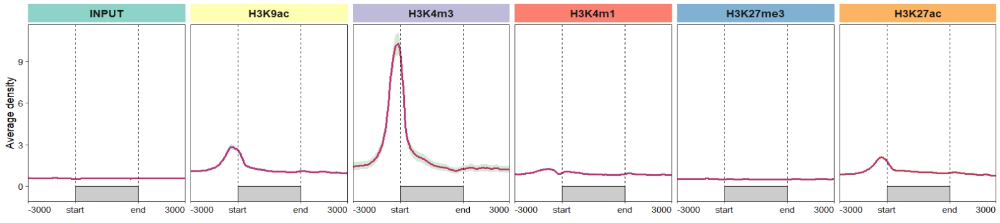
Control the vertical line layer:
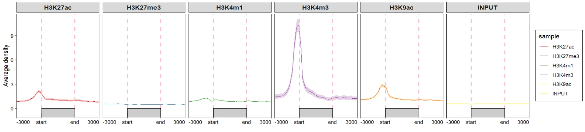
2.6.2 Heatmap plot
Default output:
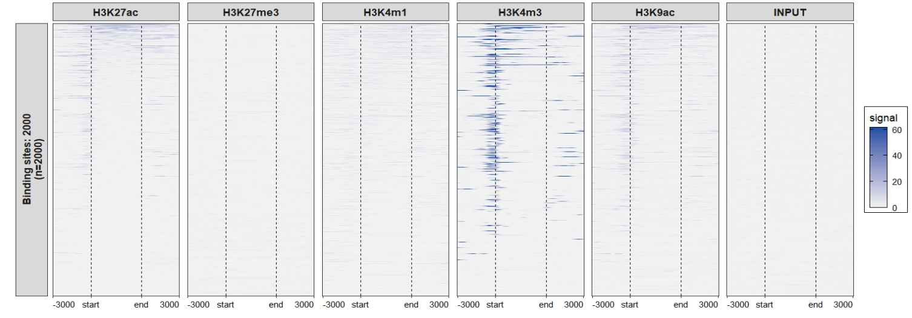 Change the facet background colors:
ChipVis(object = mat_df,
plot.type = "heatmap",
sample.order = rev(sample.names),
facet_heatmap_params =
list(strip = strip_themed(background_x =
elem_list_rect(fill = RColorBrewer::brewer.pal(6,"Set3"),
color = RColorBrewer::brewer.pal(6,"Set3"))
)))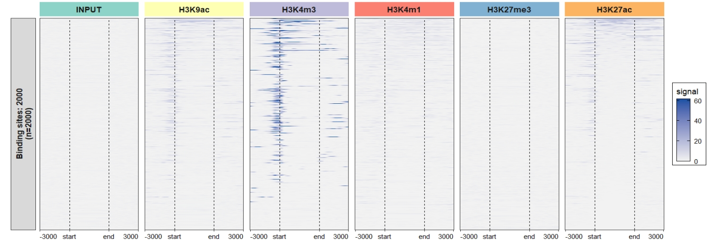 Remove the y axis facet border colors:
ChipVis(object = mat_df,
plot.type = "heatmap",
sample.order = rev(sample.names),
facet_heatmap_params =
list(strip = strip_themed(background_x =
elem_list_rect(fill = RColorBrewer::brewer.pal(6,"Set3"),
color = RColorBrewer::brewer.pal(6,"Set3")),
background_y = elem_list_rect(color = "grey95")
)))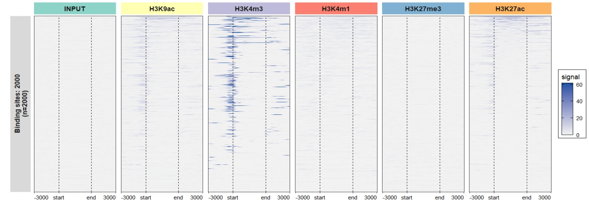 Assign each sample with different color scales:
library(RColorBrewer)
multi_heatmap_col = list(c("grey95",brewer.pal(12,"Set3")[1]),
c("grey95",brewer.pal(12,"Set3")[2]),
c("grey95",brewer.pal(12,"Set3")[3]),
c("grey95",brewer.pal(12,"Set3")[4]),
c("grey95",brewer.pal(12,"Set3")[5]),
c("grey95",brewer.pal(12,"Set3")[6]))
ChipVis(object = mat_df,
plot.type = "heatmap",
sample.order = rev(sample.names),
facet_heatmap_params =
list(strip = strip_themed(background_x =
elem_list_rect(fill = RColorBrewer::brewer.pal(6,"Set3"),
color = RColorBrewer::brewer.pal(6,"Set3")),
background_y = elem_list_rect(color = "grey95")
)),
multi.heatmap.col = multi_heatmap_col)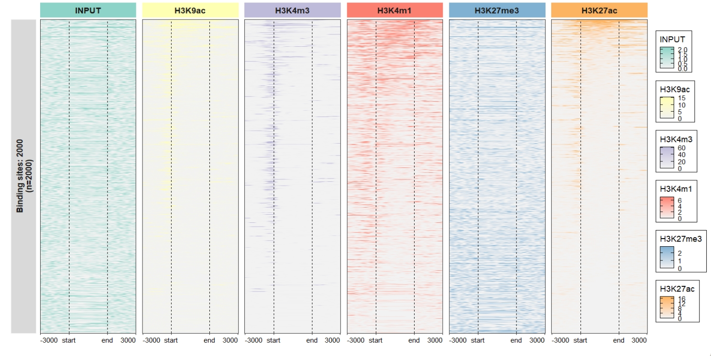
2.7 Cluster for genes
Sometimes you need cluster the genes into multiple groups like gain/upregulatted genes, retained/non-changed genes and loss/downregulatted genes. You can define the row_split parameters to define how the genes were grouped by.
Here we split the genes into three groups and add group labels for samples.
row_split = rep(c("group1", "group2","group3"), c(400,600,1000))
# get matrix data
mat_df.sp <- retriveData(mat.list = mat_list,
sample.names = sample.names,
row.split = row_split,
group.sample = rep(c("treat","control"),c(3,3)))Plot profile:
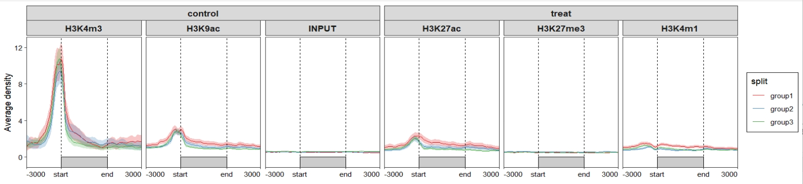
Change samples orders:
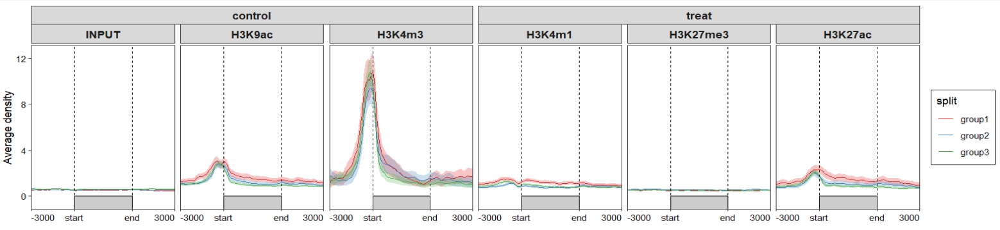 Change line colors:
ChipVis(object = mat_df.sp,
plot.type = "profile",
sample.order = rev(sample.names)) +
scale_color_brewer(palette = "Paired") +
scale_fill_brewer(palette = "Paired")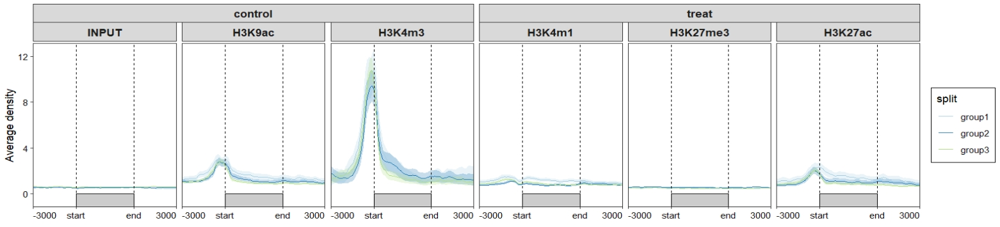
Add nested line for samples groups:
ChipVis(object = mat_df.sp,
plot.type = "profile",
sample.order = rev(sample.names),
facet_profile_params = list(nest_line = element_line(linetype = 1)),
theme_params = list(strip.background = element_blank(),
ggh4x.facet.nestline = element_line(linewidth = 1,
colour = "black")))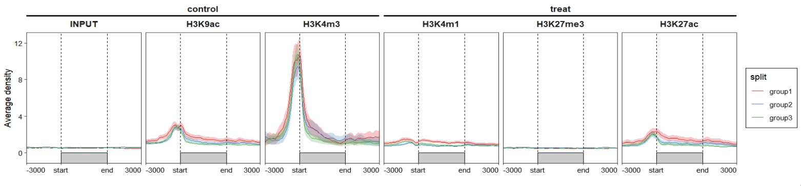 Change facet background colors:
ChipVis(object = mat_df.sp,
plot.type = "profile",
geom_line_params = list(linewidth = 1),
sample.order = rev(sample.names),
facet_profile_params =
list(strip = strip_themed(background_x =
elem_list_rect(fill = c(rep(c("#85E6C5","pink"),c(3,3)),
RColorBrewer::brewer.pal(6,"Set3")),
color = c(rep(c("#85E6C5","pink"),c(3,3)),
RColorBrewer::brewer.pal(6,"Set3")))
)),
theme_params = list(panel.spacing.x = unit(0,"mm")))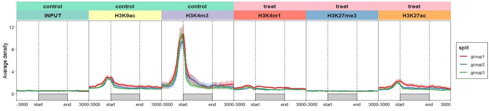
Heatmap visualization:
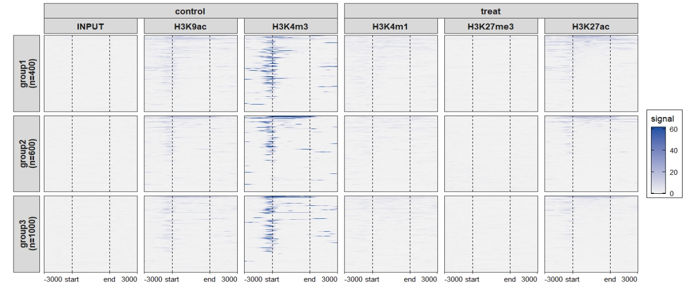
Add nested line:
ChipVis(object = mat_df.sp,
plot.type = "heatmap",
sample.order = rev(sample.names),
facet_heatmap_params = list(nest_line = element_line(linetype = 1)),
theme_params = list(strip.background = element_blank(),
ggh4x.facet.nestline = element_line(linewidth = 1,
colour = "black")))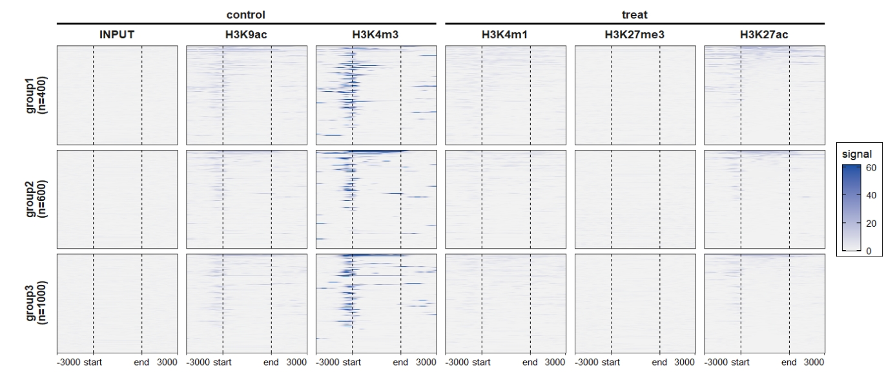 Change the rowsplit groups orders:
ChipVis(object = mat_df.sp,
plot.type = "heatmap",
sample.order = rev(sample.names),
facet_heatmap_params = list(nest_line = element_line(linetype = 1)),
theme_params = list(strip.background = element_blank(),
ggh4x.facet.nestline = element_line(linewidth = 1,
colour = "black")),
rowsplit.order = c("group3\n(n=1000)","group1\n(n=400)","group2\n(n=600)"))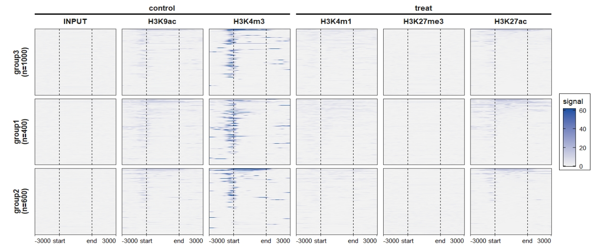
Combine the profile plot and heatmap:
ChipVis(object = mat_df.sp,
plot.type = "both",
sample.order = rev(sample.names),
facet_profile_params = list(nest_line = element_line(linetype = 1)),
add_nested_line = T)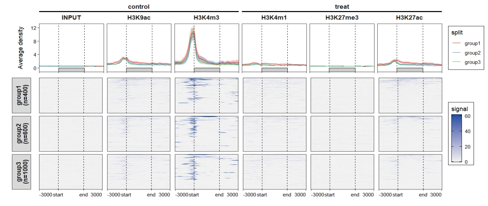 Control the color legend bar height:
ChipVis(object = mat_df.sp,
plot.type = "both",
sample.order = rev(sample.names),
facet_profile_params = list(nest_line = element_line(linetype = 1)),
add_nested_line = T,
multi.heatmap.col = multi_heatmap_col,
multi_legend_barheight = 0.75)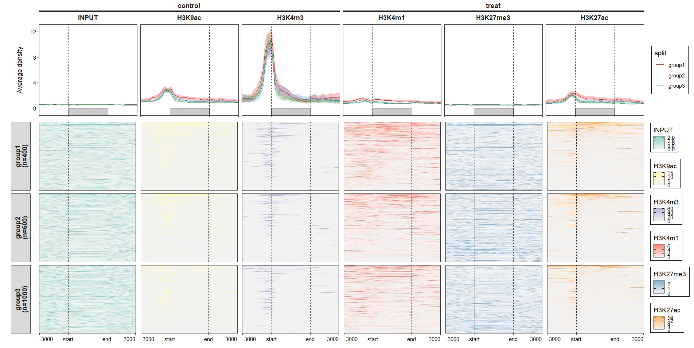 Put the legend below the plot:
ChipVis(object = mat_df.sp,
plot.type = "both",
sample.order = rev(sample.names),
facet_profile_params = list(nest_line = element_line(linetype = 1)),
add_nested_line = T,
theme_params = list(legend.position = "bottom"),
geom_line_params = list(show.legend = F),
multi.heatmap.col = multi_heatmap_col,
multi_legend_barheight = 0.75)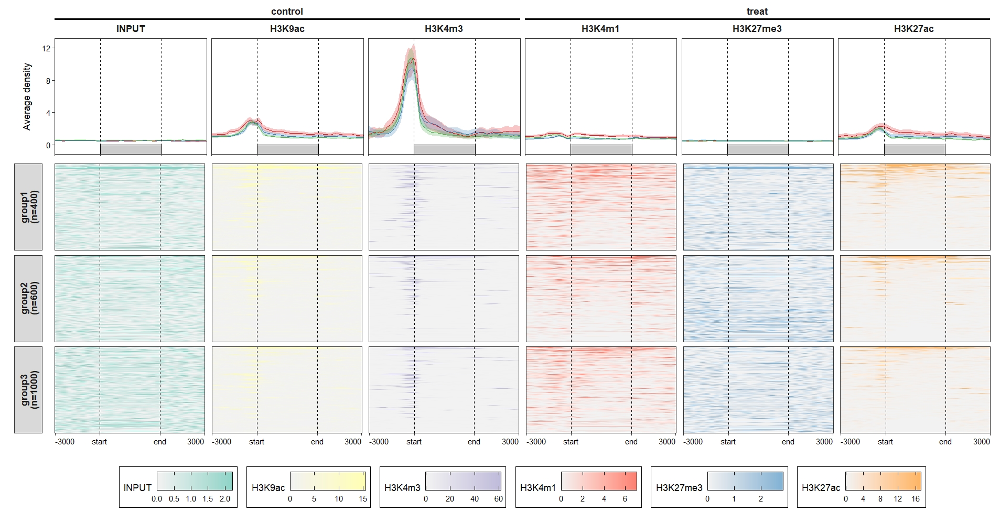
2.8 Plot around TSS site
Upper codes showed how we plot around region body of interest genomic regions. Here we show example plots around TSS sites.
Perepare data we need:
tss <- promoters(gtf |> head(2000),upstream = 0, downstream = 1)
tss
# GRanges object with 2000 ranges and 0 metadata columns:
# seqnames ranges strand
# <Rle> <IRanges> <Rle>
# [1] 1 11869 +
# [2] 1 29806 -
# comput matrix
lapply(seq_along(bwfile), function(x){
# func test
bw <- import.bw(bwfile[x])
mat_trim = normalizeToMatrix(bw, tss, value_column = "score",
extend = 3000, mean_mode = "w0", w = 50,
keep = c(0, 0.99),
background = 0,
smooth = TRUE)
}) -> mat_list
sample.names <- c('H3K27ac','H3K27me3','H3K4m1','H3K4m3','H3K9ac','INPUT')
# get matrix data
mat_df.sp.tss <- retriveData(mat.list = mat_list,
sample.names = sample.names,
row.split = row_split,
group.sample = rep(c("treat","control"),c(3,3)))Profile plot:
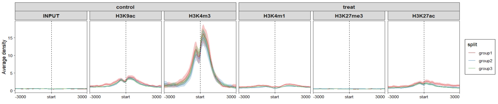 Heatmap plot:
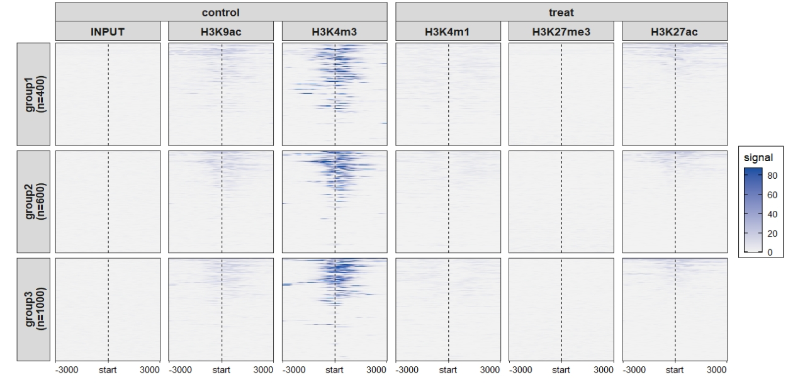 Combined plot:
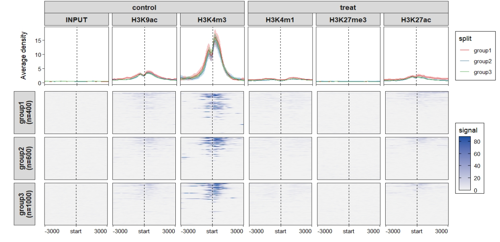 Change the axis labels:
attr(mat_df.sp.tss,"axis_name") <- c("-3kb","TSS","3kb")
ChipVis(object = mat_df.sp.tss,
plot.type = "both",
sample.order = rev(sample.names),
facet_profile_params = list(nest_line = element_line(linetype = 1)),
add_nested_line = T)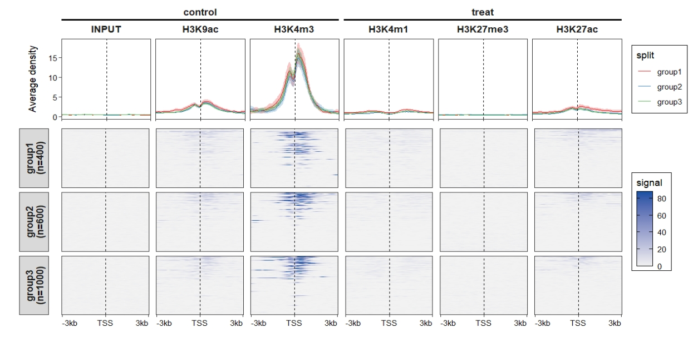
2.9 Samples with different target regions
In some situations, each sample may enriched different target genomic regions rather than same regions. This means the y axis is different from each other. Here we also show some examples for this situation.
Get normalized signals for each sample with different regions:
genes <- head(gtf,500)
genes2 <- gtf[501:1500,]
genes3 <- gtf[1501:3000,]
rg <- list(genes,genes2,genes3)
# comput matrix
lapply(seq_along(bwfile[1:3]), function(x){
# func test
bw <- import.bw(bwfile[x])
mat_trim = normalizeToMatrix(bw, rg[[x]], value_column = "score",
extend = 3000, mean_mode = "w0", w = 50,
keep = c(0, 0.99),
background = 0,
smooth = TRUE)
}) -> mat_list.ng
sample.names <- c('H3K27ac','H3K27me3','H3K4m1')
# get matrix data
mat_df <- retriveData(mat.list = mat_list.ng,
sample.names = sample.names)We can see the matrices have different rows:
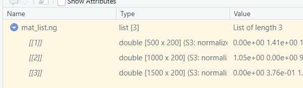
Profile plot:
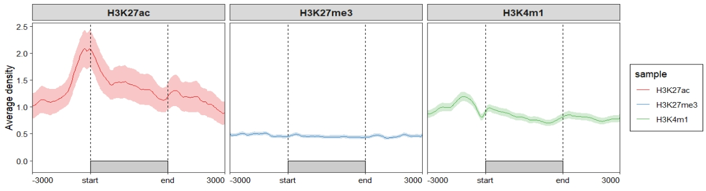
Heatmap plot, here you can see some blank facet panels in plot. This is because each sample have different target regions:
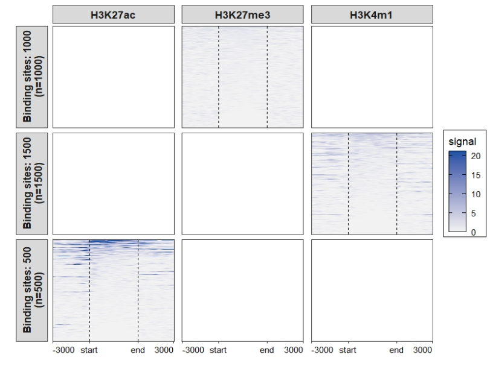
You can use the merge_facet the re-arrange the plot:
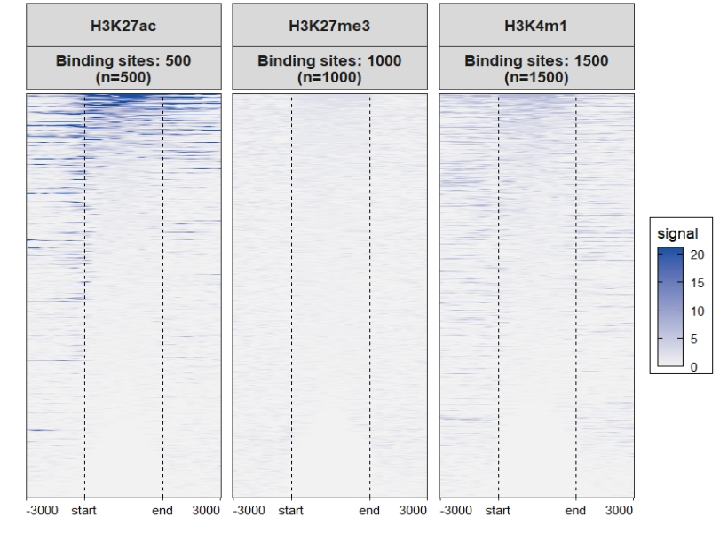
Assign multiple color scales for each sample:
ChipVis(object = mat_df,
plot.type = "heatmap",
merge_facet = T,
multi.heatmap.col = list(c("grey95","#068DA9"),
c("grey95","#C23373"),
c("grey95","#EE9322")))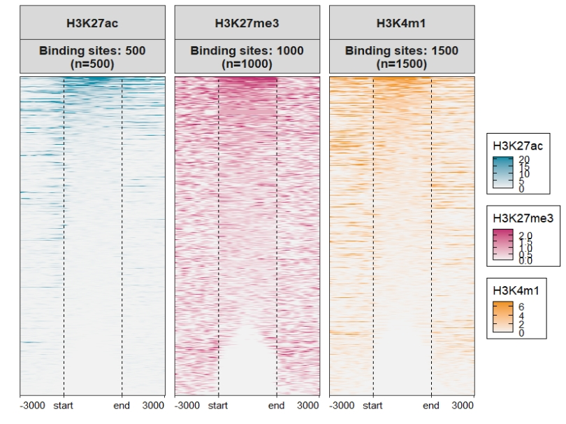